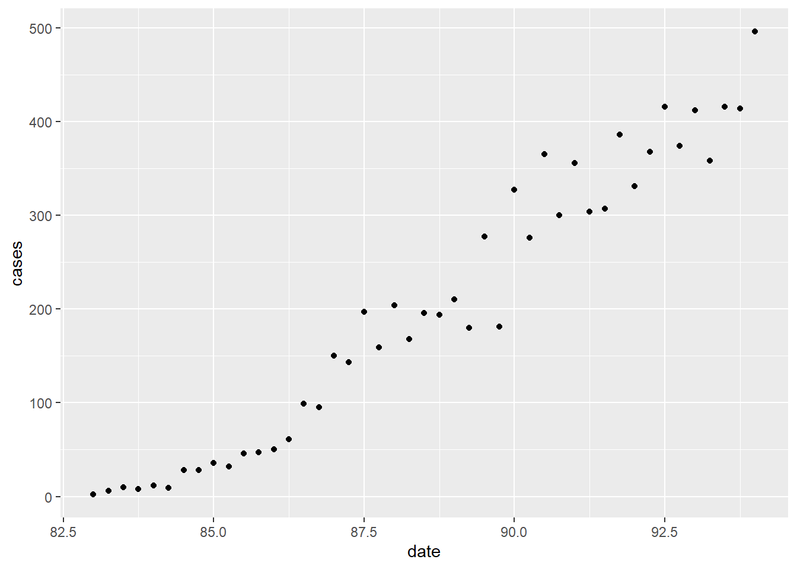
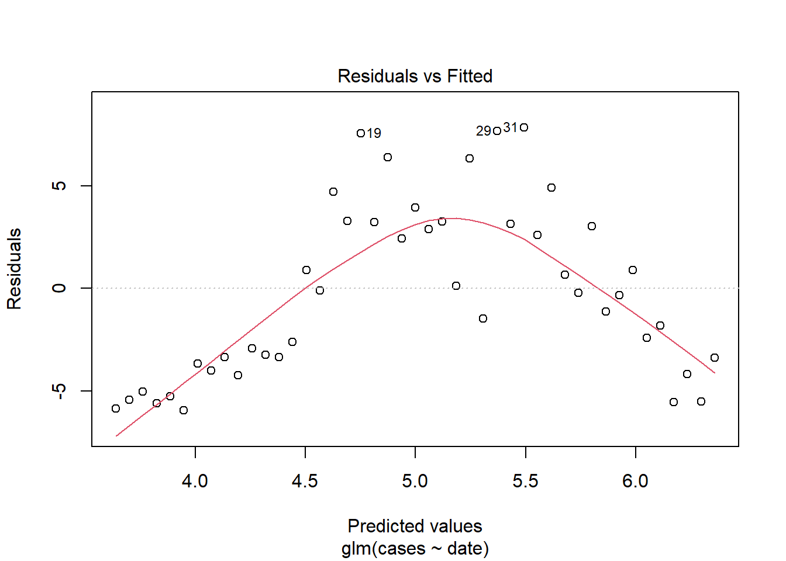
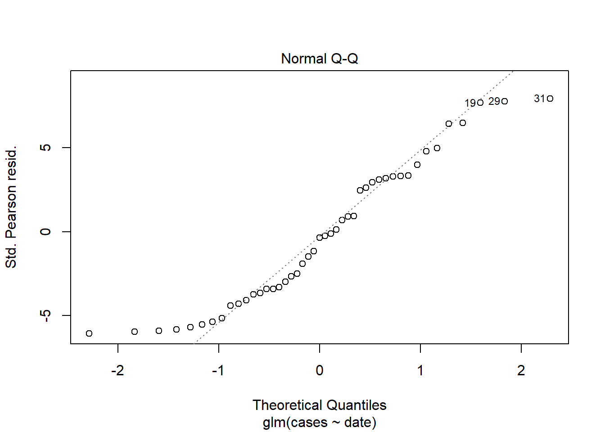
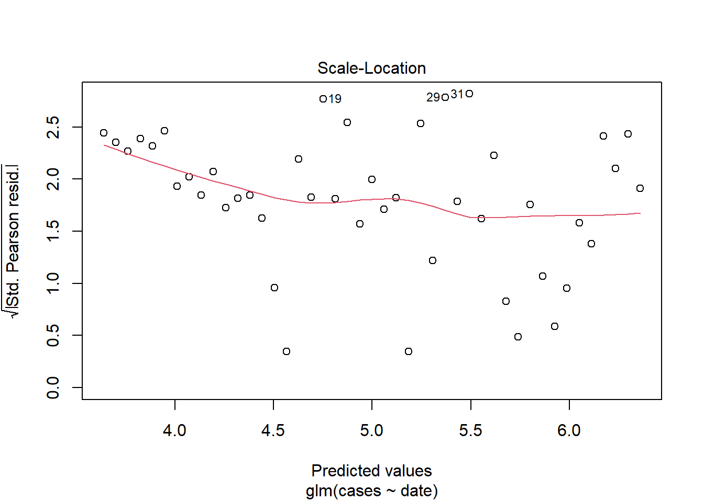
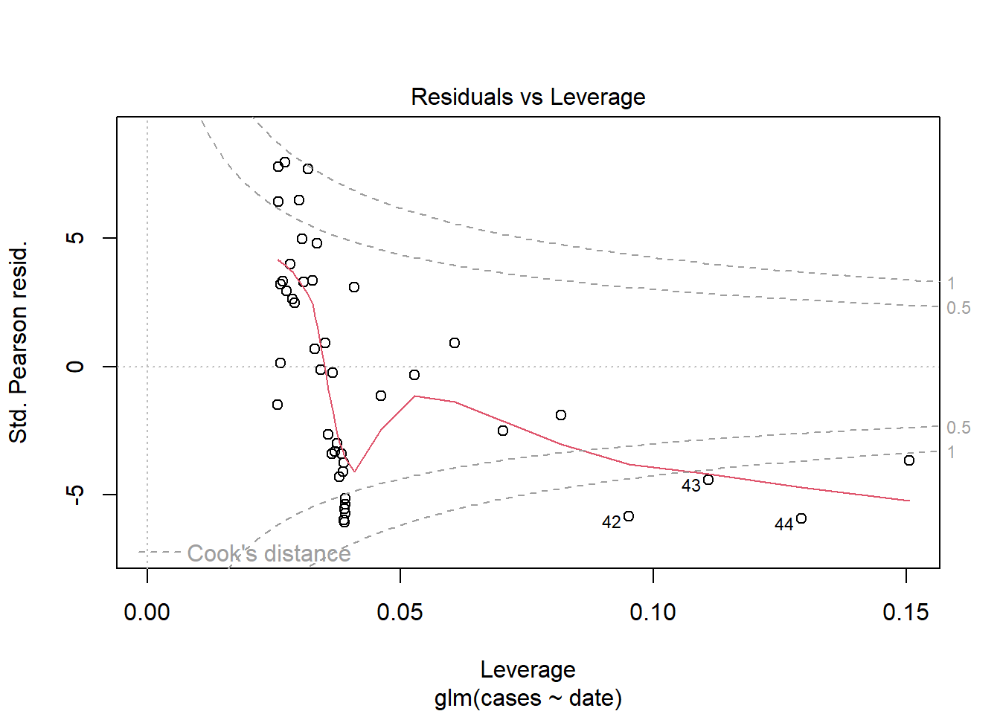
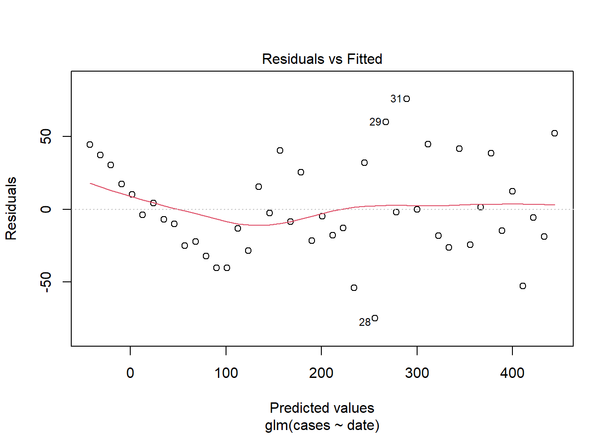
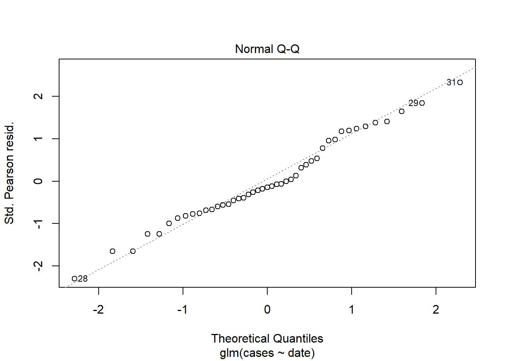
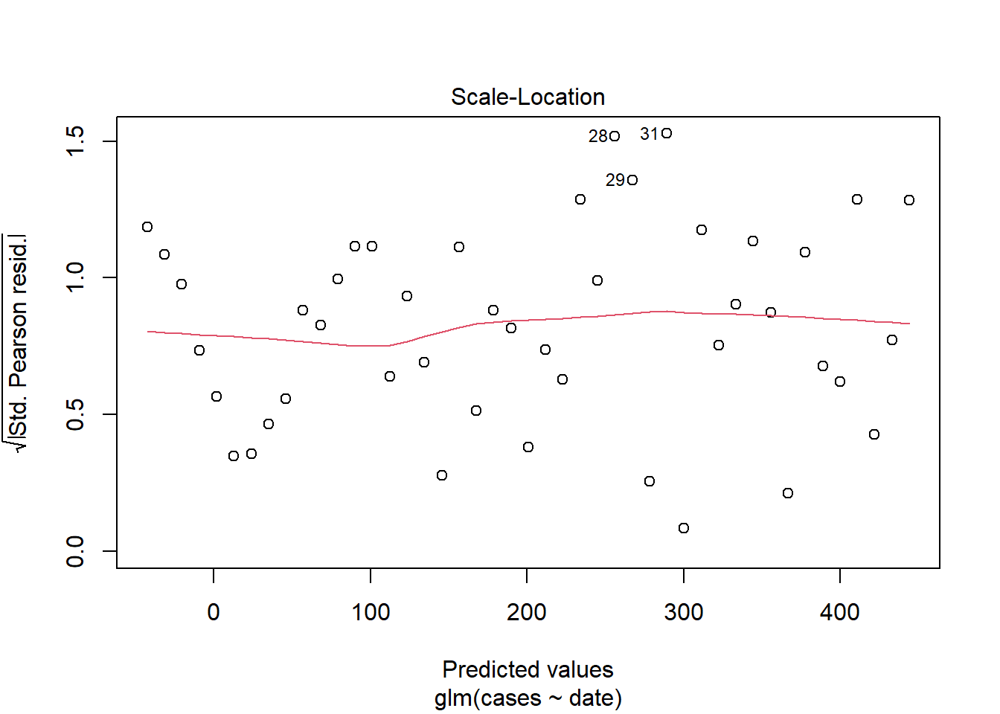
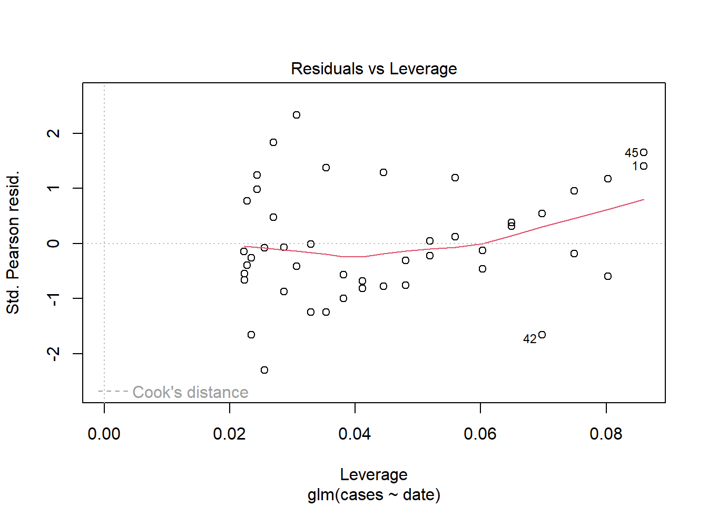

506CourseWork
For the love of god don’t forget
Do not display too much raw R output (e.g. don’t display the full output of ‘summary(model)’), but edit this down to the essentials. Ensure to include justification for each step of your analyses, providing comments alongside your R code to explain what you are doing and add appropriate titles and labelled axes to your plots.
Question 1
We have the model:
\(Yi\) ~ \(N(\frac{\theta1xi}{\theta2 + xi}\), \(\sigma^2)\)
Question 1 a)
Due to the visible non-linearity of the model, we would be required to significantly transform our data to get a linear model that would have an acceptable fit of the data. We can also see that the response data seems to be only positive while a normal distribution goes from ]-\(\infty\),\(\infty\)[ . Such arbitrary transformation increases the complexity of the model, making it less interpretable and not respect the nature of the data.
Linear regression models are based on the assumption that the relationship between the independent and dependent variables is linear. If the relationship between the variables is non-linear, a linear regression model may not be appropriate to use. In such cases, transforming the data to make the relationship linear may not result in an accurate representation of the true relationship, and can lead to overfitting or underfitting. Additionally, transforming the data can result in a loss of interpretability of the results, as it can be difficult to understand the meaning of the transformed variables.
Another issue with using a linear regression model for non-linear data is that the residuals, which represent the difference between the observed and predicted values, may not be normally distributed, which is another assumption of linear regression models. This can lead to biased or incorrect results.
In conclusion, when the data is non-linear, a linear regression model may not be the best choice for modelling the relationship between the variables, and alternative methods need to be considered.
//should I talk about the increase in variance or is it only topic 2?
Question 1 b)
The Yi are independent so the likelihood is a product of the individual pdfs.
\(Y\) ~ \(N(\frac{\theta1 xi}{\theta2+xi})\)
\(L(\beta0,\beta1,\sigma^2;x,y)\) = \(\prod_{i=1}^{n}\) \(p(\beta0,\beta1,\sigma^2;x,y)\)
\((\overset{Ni}{yi})\)
Question 1 c)
Question 1 d)
Question 2
Model 1:
\(Yi\) ~ \(Pois(\lambda i)\)
\(log(\lambda i) = \beta0 + \beta1 xi\)
Model 2:
\(Yi\) ~ \(N(\mu i,\sigma^2)\)
\(log(\mu i) = \gamma0 +\gamma1 xi\)
Question 2 a)
As we can from the graph and what we can determine from the nature of the data represented in such graph the recorded number of AIDS cases is a count variable and the counts are non-negative integers.
The first model, a Poisson distribution, would be a more appropriate choice. The Poisson distribution is a discrete distribution that models count data which respects the nature of the data
The second model, a Normal distribution, would not be the best fit since its range is from ]-\(\infty\),\(\infty\)[ and expects continuous values, not respecting the nature of the data.
The log-link function in both models ensures that the predicted values are always positive. // redo this pls
Question 2 b)
The Yi are independent so the likelihood is a product of the individual pdfs.
\(L(\theta1,theta2,\sigma^2;y,x)\)
# Fitting in R model < −glm(< response >∼< covariates >,data = <data>,
# family = gaussian(link=’identity’)) model <- glm(<response> ∼
# <covariates>, data = <data>, family = poisson(link=’log’))
# Fitting model 2 pois.model <- glm(ca ~ offset(logcells) + doseamt +
# doserate, data = dicentric, family = poisson(link='log'))
model2 = glm(cases ~ date, data = aids, family = poisson(link = "log"))
# Summarise the model
summary(model2)
Call:
glm(formula = cases ~ date, family = poisson(link = "log"), data = aids)
Deviance Residuals:
Min 1Q Median 3Q Max
-7.768 -4.042 -0.335 3.048 7.281
Coefficients:
Estimate Std. Error z value Pr(>|z|)
(Intercept) -16.875879 0.350353 -48.17 <2e-16 ***
date 0.247169 0.003856 64.10 <2e-16 ***
---
Signif. codes: 0 '***' 0.001 '**' 0.01 '*' 0.05 '.' 0.1 ' ' 1
(Dispersion parameter for poisson family taken to be 1)
Null deviance: 5738.16 on 44 degrees of freedom
Residual deviance: 854.02 on 43 degrees of freedom
AIC: 1153.9
Number of Fisher Scoring iterations: 5# Fitting model 1
model1 = glm(cases ~ date, data = aids, family = gaussian(link = "identity"))
# Summarise the model
summary(model1)
Call:
glm(formula = cases ~ date, family = gaussian(link = "identity"),
data = aids)
Deviance Residuals:
Min 1Q Median 3Q Max
-75.018 -21.703 -4.756 25.350 75.824
Coefficients:
Estimate Std. Error t value Pr(>|t|)
(Intercept) -3711.854 134.163 -27.67 <2e-16 ***
date 44.210 1.515 29.18 <2e-16 ***
---
Signif. codes: 0 '***' 0.001 '**' 0.01 '*' 0.05 '.' 0.1 ' ' 1
(Dispersion parameter for gaussian family taken to be 1088.729)
Null deviance: 974004 on 44 degrees of freedom
Residual deviance: 46815 on 43 degrees of freedom
AIC: 446.33
Number of Fisher Scoring iterations: 2## plotting the models
## this is the original data to then plot the models on top of
ggplot(aids, aes(x = date, y = cases)) + geom_point()
plot(model2)



plot(model1)



confint(model1, level = 1 - 0.05)Waiting for profiling to be done... 2.5 % 97.5 %
(Intercept) -3974.80950 -3448.89836
date 41.24102 47.17953confint(model2, level = 1 - 0.05)Waiting for profiling to be done... 2.5 % 97.5 %
(Intercept) -17.564979 -16.191587
date 0.239636 0.254751# As we are modelling an unbounded count we use Poisson distribution.
# The data increases exponentially so we use a log-link with a model
# linear in time.